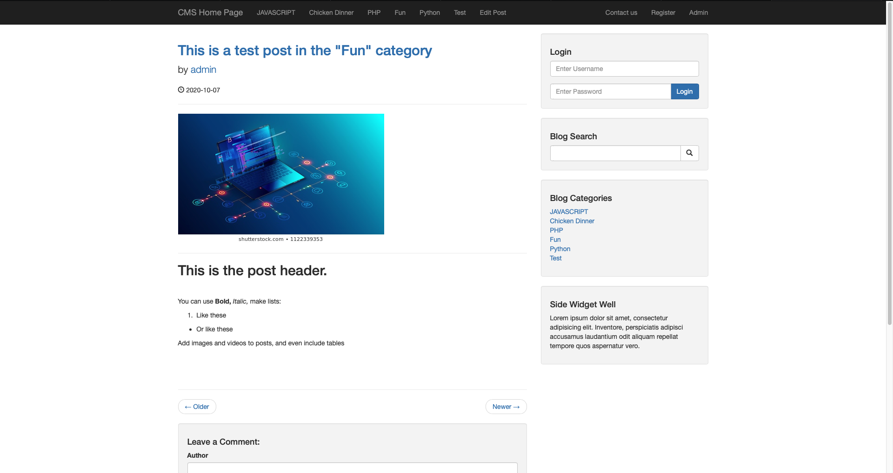
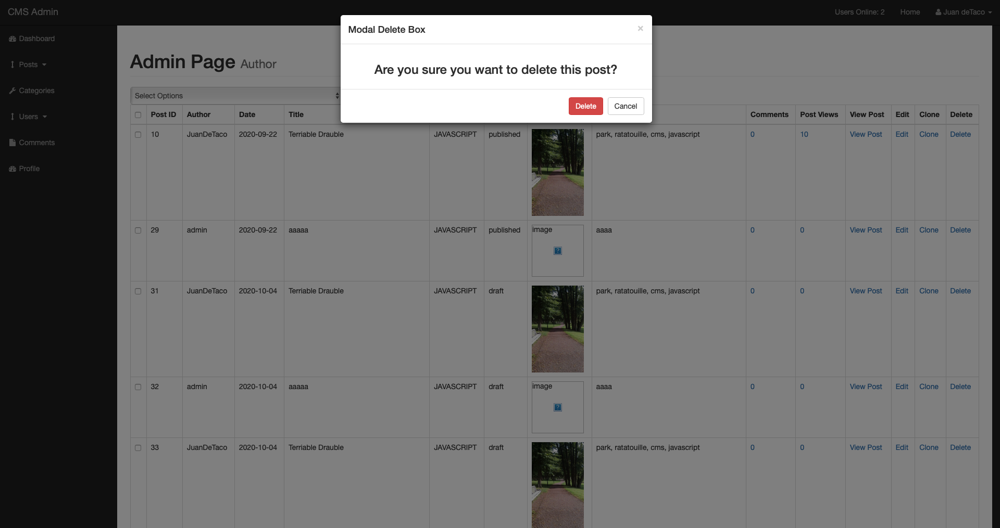
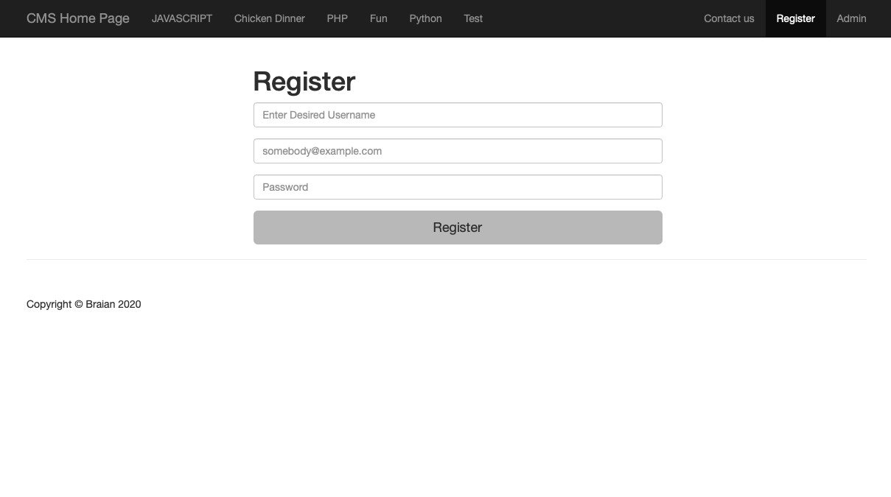

Features
Blog Admin Features

Admin page is only accessible when you're logged in. It has a $_SESSION function to make site unaccessible to unauthorized users.
Every logged in user can view the page but only admin can make some changes, like changing user rights, deleting posts and more.
The dashboard checks database for posts, comments, users and categories. It displays them all in a graph. There are pages to view all posts,
categories, users and comments. There is also Profile page, where you can edit your own profile. The CMS page displays current online users
using Jquery to refresh info every few seconds.
Blog Front Features

Blog front page is all dynamic. It displays posts if there are, if the database is empty, it displays a message, that says so
It chooses categorys from the database and shows them in the navigation bar. There is Register page, that encrypts password using
BCRYPT algorithm. Also there is a contact us page, where you can send emails to blog admin. You can sort posts by author, category and
search by tags. Search engine uses tags to find similar items from the database. You can leave comments, but they have to be approved by
admin to be shown in the comments section. Links are made active dynamically and pages are shown categories are shown using $_GET function.